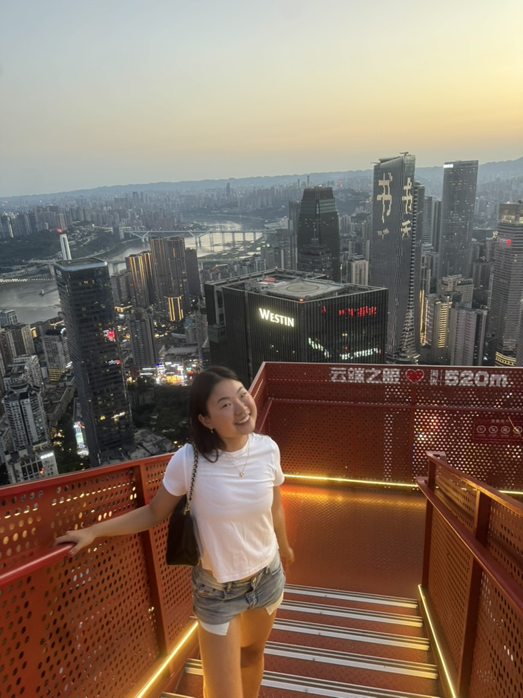
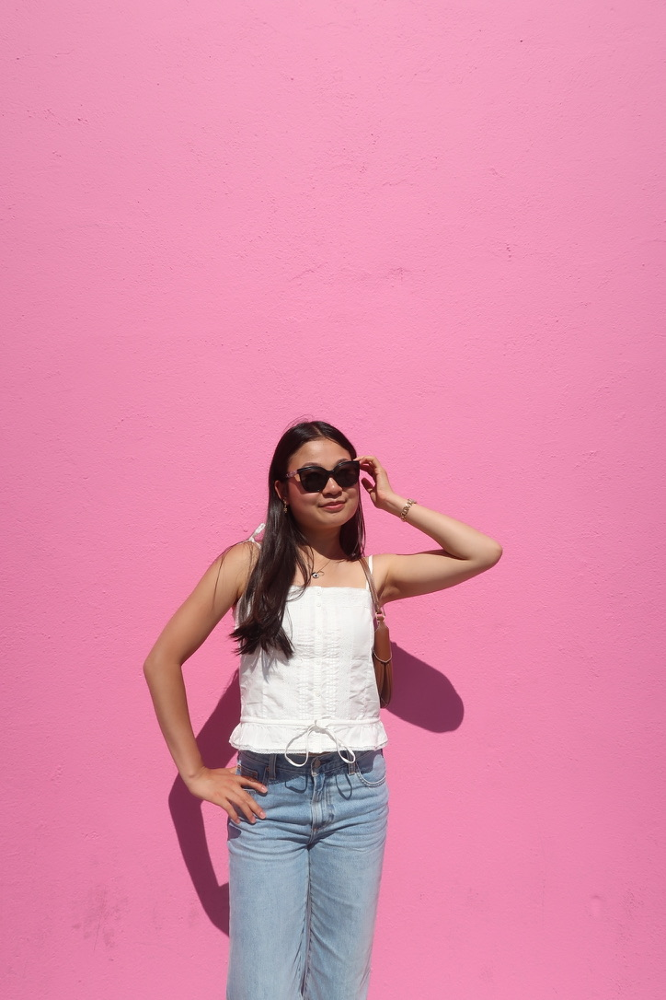
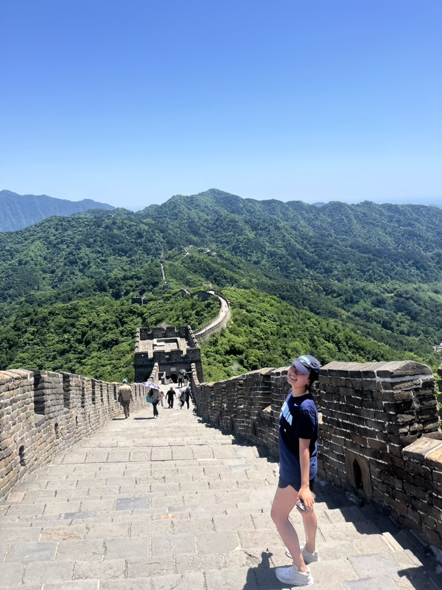
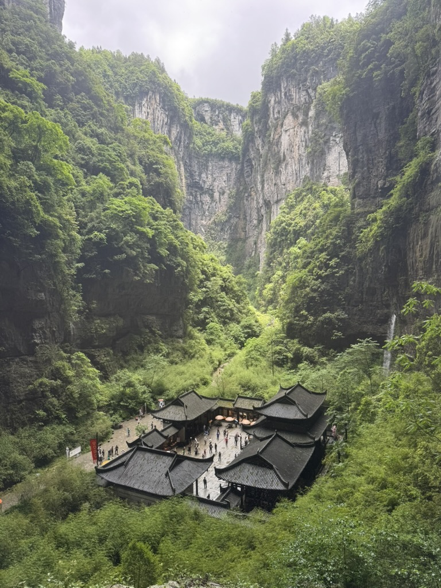
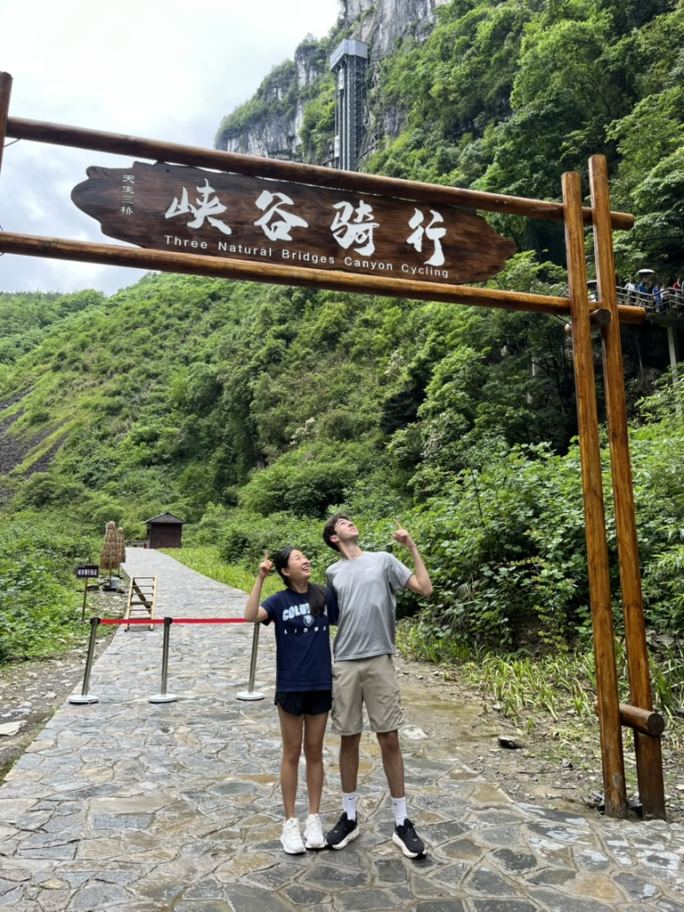
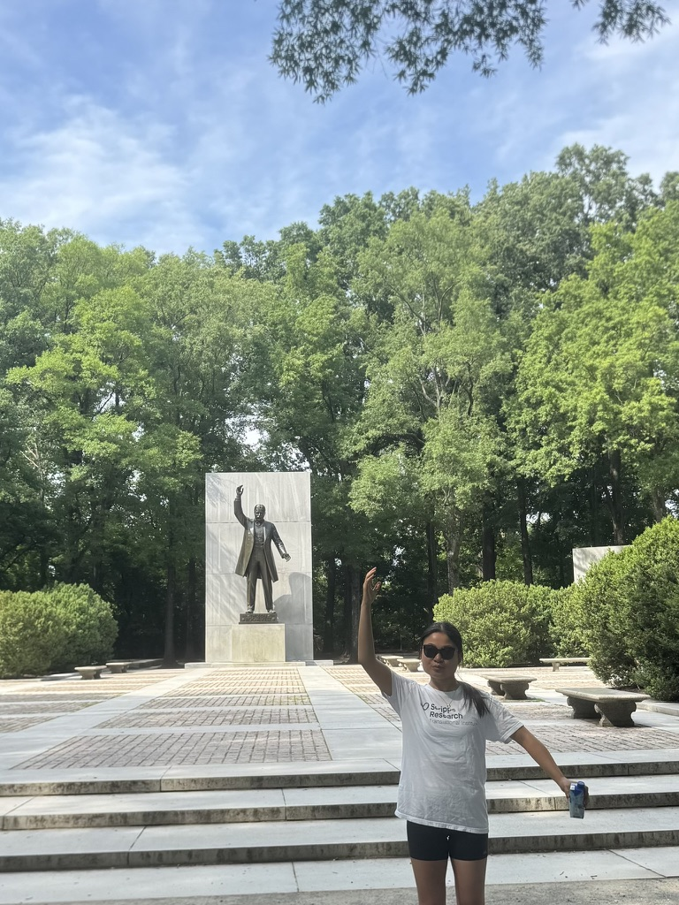
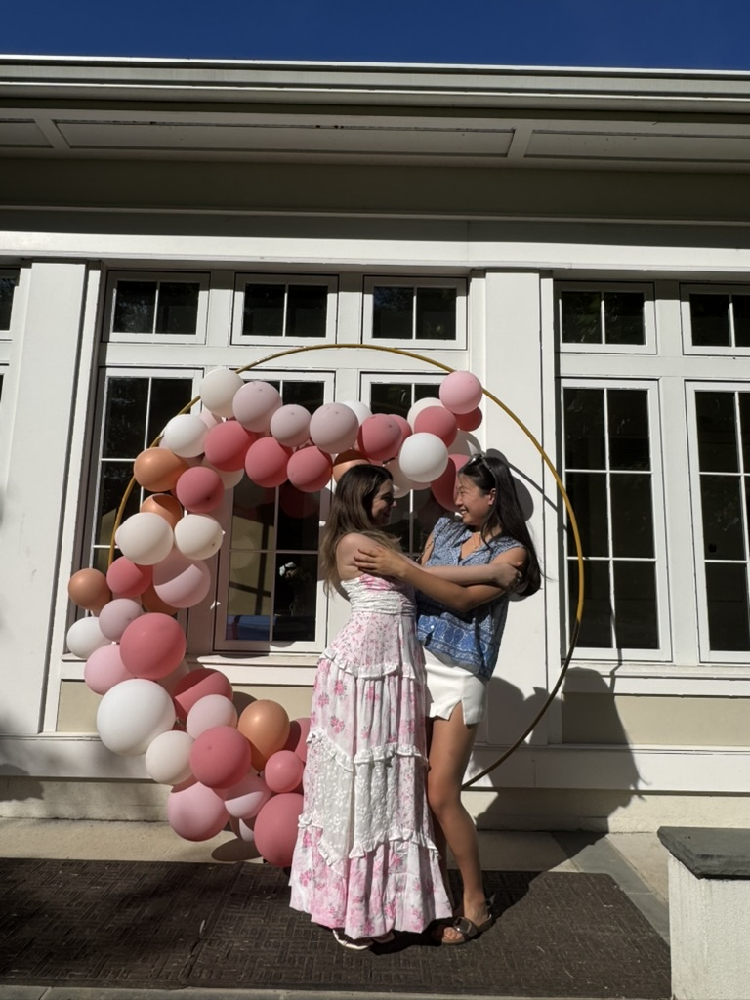

I'm interested in product, design, and systems that make life easier, especially at the intersection of healthcare and computing. Outside of school, I'm an avid dancer, pianist, and mentor for young girls in tech.
CS + Cognitive Science @ Columbia · Research @ Scripps · Startup Engineer
Designing thoughtful systems for people, health, and everyday life.
Hi, I'm Jasmine Ma. I build at the intersection of product, design, healthcare, AI, and computing, with a focus on technology that feels useful, humane, and quietly powerful.
Columbia University
New York City
- Thomas Jefferson High School for Science and Technology
- Scripps Research Translational Institute
- Dartmouth-Hitchcock Medical Center
- School of Systems Biology @ George Mason University
Selected work
Projects, research, and experiences
Selected roles and projects across startup engineering, AI product strategy, translational research, health technology, and CS education.
Consulting · Oct 2025 - Present
Ascend Consulting Group
Analyst
- Consult for venture-backed AI startups on product strategy and user research.
- Analyze interviews and engagement data for AI-powered consumer products.
- Develop recommendations on positioning, growth strategy, and acquisition.
Research · Jun 2023 - Present
Scripps Research
Translational Research Intern - Data/ML
- Analyze multimodal clinical and genomic datasets for RET-positive lung cancer research.
- Collaborate with Tempus AI scientists on real-world oncology data analyses.
- Develop computational workflows for precision medicine research under Dr. Jacob New.
Python · R · SQL · Tempus Lens · Jupyter Notebook · Clinical Genomics
Engineering · Jan 2026 - May 2026
Columbia Build Lab
Startup Engineer · New York City Metropolitan Area
- Built investor-facing React dashboards for a Columbia Business School startup.
- Developed interactive analytics for commercial real estate benchmarking.
React · Supabase · Git · Figma
Founder · Dec 2021 - May 2026
Inspirigirl
Founder & Executive Director
- Founded a nonprofit providing free computer science education for girls worldwide.
- Built a community of 500+ students across 13 countries with 30+ volunteer instructors.
- Designed and taught courses in Python, Java, web development, Swift, and CAD.
Design · Mar 2026 - Apr 2026
Probat AI
UI/UX & Front End Intern
Designed front-end interfaces and UI prototypes for AI-powered applications during CORE Fellowship.
React · Figma · Claude · Cursor
Development finance · Jun 2025 - Jul 2025
The World Bank Group
Intern
Evaluated IFC investment case studies, IMF policy decisions, and emerging market economies with multidisciplinary teams.
Excel · PowerPoint · Financial Modeling · Case Analysis
Healthcare AI · Jun 2023 - Aug 2023
Dartmouth Hitchcock Medical Center and Clinics
EDIT Intern
Applied machine learning and computer vision techniques to skin cancer diagnosis through the EDIT program.
Python · PyTorch · OpenCV · Jupyter Notebook
Computational biology · Jun 2023 - Aug 2023
George Mason University
ASSIP Intern @ Vaisman Lab
Developed machine learning methods for protein stability prediction and computational drug discovery research.
Python · PyTorch · BioPython · Jupyter Notebook
App development · Jun 2022 - Jul 2022
Kode With Klossy
App Development Scholar
Built Spot-It, an iOS app connecting users with women's shelters and healthcare resources using geospatial search.
Swift · Xcode · Google Maps SDK · Firebase
Gallery
Small moments, saved in warm light
A visual scrapbook for places, people, projects, and tiny scenes I want to remember.







Let's connect
Have an idea, opportunity, or note?
I like thoughtful projects, human-centered tools, health technology, and conversations that start with curiosity.